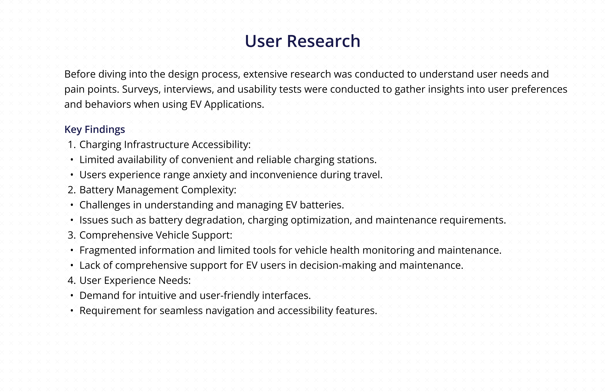

🚗 Hari EV Sector Platform – UX Case Study
Tools: Figma, FigJam, Google Forms, Illustrator, Photoshop
This case study covers how I designed a full EV charging & vehicle support app from concept to prototype — including user research, wireframes, visual UI, and testing.
Product Overview

Problem Statement

User Research

Information Architecture

Competitive Analysis

User Empathy

User Persona

Design Process

Visual Design Screens 1

Visual Design Screens 2

Thank You